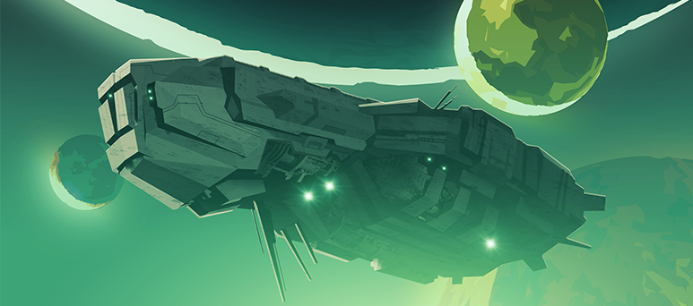

Tan ridículo como suena, este videojuego se enfoca en la experiencia de un grupo de hasta cuatro enanos trabajando para una empresa minera en el espacio, en expediciones al planeta Hoxxes IV.
Este título ofrece una experiencia cooperativa pve, osea que el jugador se enfrenta al entorno, con la compañía de otros jugadores en línea, o por sí mismo en modo offline.
Podemos dividir el juego en una serie de características que hacen de la experiencia inmersiva y que promociona el juego en equipo.

El escenario más a fondo. De por sí, el juego no se enfoca en contar una historia, sino en la jugabilidad que ofrece.
Los jugadores toman el control de sus personajes, los enanos, y se lanzan al planeta Hoxxes desde la estación de Deep Rock Galactic, buscando reclamar los recursos ocultos en este planeta.
Sin embargo, dicho mundo se encuentra infestado por una flora muy hostil, que se pondrá en el camino de los mineros en su busqueda de oro y otras riquezas. Por suerte, estos se encuentran armados con una gran variedad de armas
que veremos más abajo, así como los enemigos que enfrentan, y los escenarios que recorren en sus aventuras.
Las diferences facetas de Deep Rock Galactic:
Link a su página web.
Link a su wikipedia.